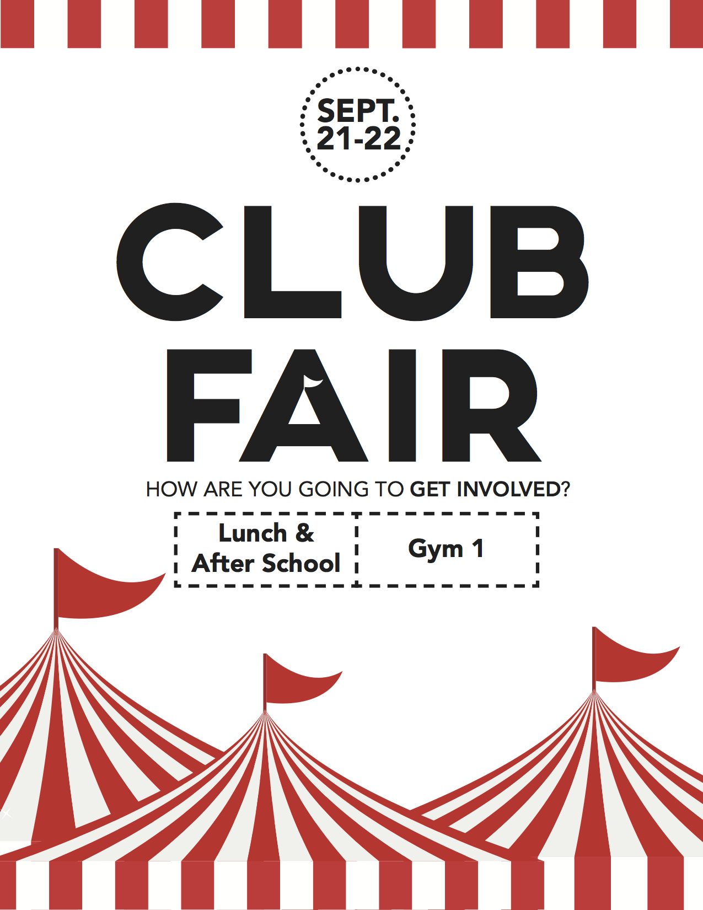
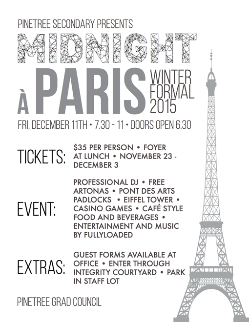
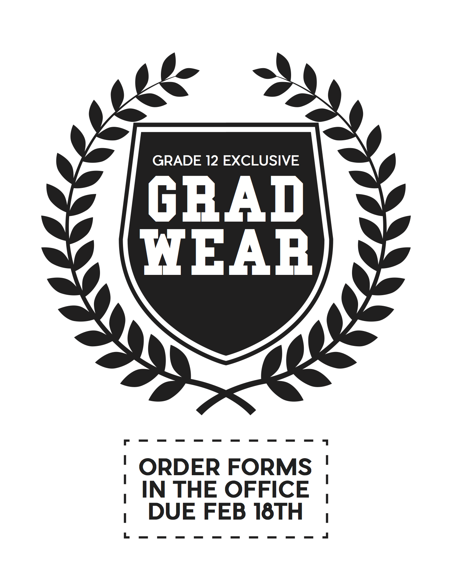
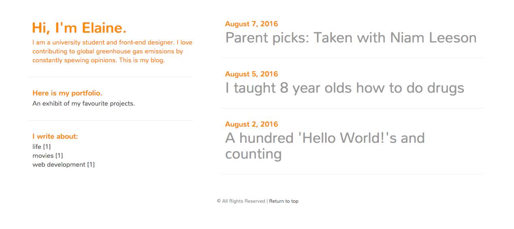

Posters
Programs Used: Adobe Illustrator + InDesign
High school hallways are peppered with clip art ads vying for a passing student's attention, so simplicity is king. Here are a few posters I've worked on just in the past year. All the graphics on these posters are vectors, ensuring a crisp print at any size.
Club Fair
A single dominating colour and decorative lines make this otherwise boring poster pretty fun to look at. And I know: The little flag in the title is a nice touch.
Winter Formal
This is a flyer, which I found challenging because there was so much information that I had include. Since it was to be printed on black and white printers, I designed it in grayscale.
Spirit Wear
I was requested to create a poster that could be mass printed in black and white, so I left out the colour. On display is the embarrassing frequency which I resort to using dashed lines.
Websites
Tools Used: Bootstrap + JQuery
The first website I've finished and successfully published is my portfolio, which is mobile-responsive and built completely from scratch.
Blog
A simple template built using Jekyll. The layout showcases my love for orange and clickbait article titles. I added functional touches such as tags, pagination, and an RSS feed.